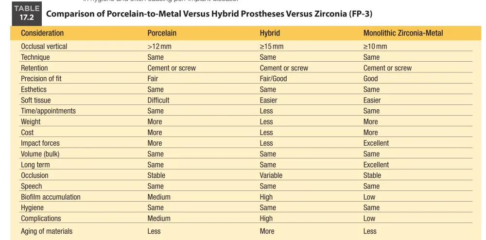
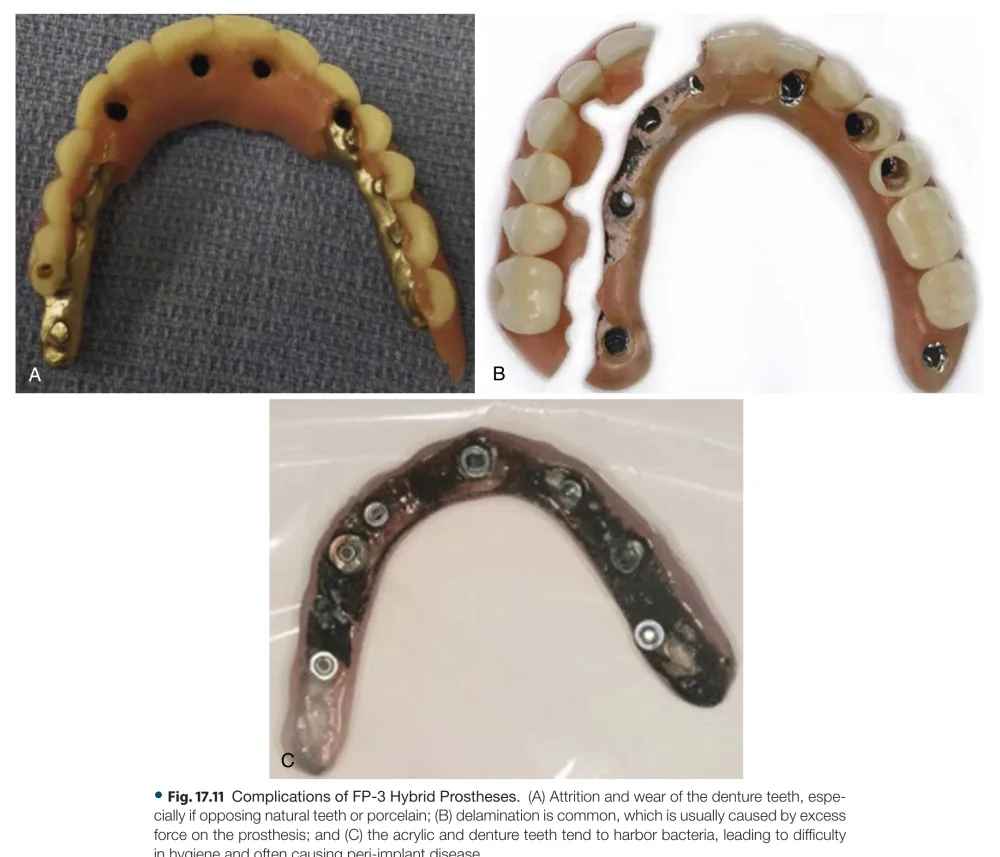

نسخه استخراجشده؛ ترجمه یا تأیید علمی انجام نشده است. وضعیت: captured
FP-3 تنها گزینهای است که رنگ لثه را هم بازسازی میکند، و به همین دلیل انتخاب ماده در آن تصمیم بزرگتری از FP-1 و FP-2 است.
سه گزینه را کنار هم مقایسه کنیم: پرسلن روی فلز، هیبرید (دندان مصنوعی و آکریل) و زیرکونیای مونولیتیک.
و مهمترین معیار این مقایسه، فضای عمودی مورد نیاز است:
• پرسلن روی فلز: بیش از ۱۲ میلیمتر
• هیبرید: ۱۵ میلیمتر یا بیشتر
• زیرکونیای مونولیتیک: ۱۰ میلیمتر یا بیشتر
این ترتیب را بهدقت نگاه کن، چون خلاف تصور رایج است: هیبرید — که ارزانترین و سبکترین است — بیشترین فضای عمودی را میخواهد، و زیرکونیا کمترین را.
و اهمیت بالینیاش را از ماژول یک میدانی: فضای ارتفاع تاج (CHS) یک کانتیلور عمودی است و هرچه بیشتر شود بیومکانیک بدتر میشود. پس در بیماری با CHS محدود، زیرکونیا ممکن است تنها گزینهی ممکن باشد؛ و در بیماری با CHS زیاد، هیبرید فضا را پر میکند بیآنکه وزن اضافه کند.
و بقیهی معیارها سه الگوی روشن میسازند:
الگوی یکم — هیبرید ارزان و سبک است، ولی گرانترین از نظر عوارض:
• هزینه کمتر، وزن کمتر، زمان و جلسات کمتر، نیروهای ضربهای کمتر
• ولی: تجمع بیوفیلم بالا، عوارض بالا، پیر شدن مواد بیشتر، اکلوژن متغیر
«اکلوژن متغیر» را نگه دار — هیبرید تنها گزینهای است که در اکلوژن «پایدار» نگرفته، و این با سایش دندانهای مصنوعی همخوان است.
الگوی دوم — زیرکونیا در معیارهای بلندمدت برنده است:
• نیروهای ضربهای عالی، بلندمدت عالی، دقت نشست خوب (بهترین از سه)، تجمع بیوفیلم کم، عوارض کم، اکلوژن پایدار
• ولی: وزن بیشتر، هزینه بیشتر
الگوی سوم — پرسلن روی فلز در میانه است، با یک ضعف مشخص:
• دقت نشست متوسط (ضعیفترین از سه)، بافت نرم دشوار — تنها گزینهای که در بافت نرم «دشوار» گرفته
• بیوفیلم و عوارض متوسط، اکلوژن پایدار، پیر شدن مواد کمتر
و چند معیار برای هر سه ماده یکساناند — تکنیک، زیبایی، حجم، گفتار و بهداشت. یعنی این پنج معیار در تصمیم تو نقشی ندارند؛ تفاوتها جای دیگری است. بهویژه توجه کن که زیبایی در هر سه یکسان ارزیابی شده — پس انتخاب ماده را با استدلال زیبایی توجیه نکن.
و گیر در هر سه یکسان است: سمانی یا پیچشونده — انتخابی که در ماژول پنجم به آن میپردازیم.

پروتز هیبرید FP-3 سه عارضهی مشخص و مستند دارد. هر سه را باید بشناسی، چون هر سه قابل پیشبینیاند.
عارضهی یکم — سایش: «اتریشن و سایش دندانهای مصنوعی، بهویژه اگر مقابل دندانهای طبیعی یا پرسلن باشند.»
به قید «بهویژه اگر» دقت کن. این یعنی قوس مقابل، پیشبینیکننده است. اگر بیمار در قوس مقابل دندان طبیعی یا پرسلن دارد، هیبرید انتخاب پرخطرتری است — و این با ضریب قوس مقابل که در ماژول یک دیدی همراستاست.
عارضهی دوم — دلامیناسیون: «دلامیناسیون شایع است، که معمولاً از نیروی بیشازحد بر پروتز ناشی میشود.»
یعنی جدا شدن آکریل از فریمورک، نشانهی اضافهبار است نه صرفاً یک نقص ساخت. وقتی آن را دیدی، پیش از تعمیر به دنبال منبع نیرو بگرد.
عارضهی سوم — و مهمترین از نظر زیستی:
«آکریل و دندانهای مصنوعی تمایل دارند باکتری را در خود نگه دارند، که به دشواری در بهداشت و اغلب ایجاد بیماری پریایمپلنت میانجامد.»
این عارضه با «تجمع بیوفیلم بالا» در مقایسهی مواد میخواند — و نشان میدهد آن ارزیابی یک قضاوت آزمایشگاهی نیست، پیامد زیستی مستقیم دارد.
و اکنون یک محدودیت مشترک FP-2 و FP-3 که باید پیش از تعهد به بیمار بدانی:
«یک پروتز FP-2 یا FP-3 بهندرت پاپیلای بیندندانی بیمار یا کانتورهای ایدهآل بافت نرم را در محل خروج تاجها دارد، چون این ترمیمها زمانی به کار میروند که فضای ارتفاع تاج بیشتری وجود دارد و لب، نواحی بافت نرم بیمار را نمایان نمیکند.»
به منطق این جمله دقت کن: نبود پاپیلا یک نقص تصادفی نیست؛ پیامد ناگزیر همان شرایطی است که FP-2 و FP-3 را ایجاب کرده — یعنی CHS زیاد و تحلیل بافت.
در ماگزیلا، امبرژرهای باز میان ایمپلنتها ممکن است گیر غذا یا مشکل گفتار بسازند. و دو راهحل پیشنهادی: «این عوارض ممکن است با استفاده از یک وسیلهی متحرک جایگزین بافت نرم یا ساخت ترمیمهای سرویکالی هایپرکانتور حل شوند.»
هر دو راهحل بهایی دارند: اولی وسیلهای میافزاید و دومی بهداشت را دشوارتر میکند. و همین است که در درس بعد گزینهی متحرک را جذاب میکند.
و یک نکتهی مربوط به گفتار که تنها در ماگزیلا مطرح است:
«پروتز FP-2 یا FP-3 ماگزیلا اغلب به بافت نرم ماگزیلا امتداد داده یا مجاور آن قرار میگیرد تا گفتار مختل نشود.»
یعنی فضای باز میان پروتز و بافت در ماگزیلا مشکل تلفظ ایجاد میکند؛ ولی در مندیبل میتوان پروتز را مانند پونتیک بهداشتی بالاتر از بافت نگه داشت، به شرط آنکه فاصله آنقدر زیاد نباشد که لب پایین بیپشتیبان بماند.
